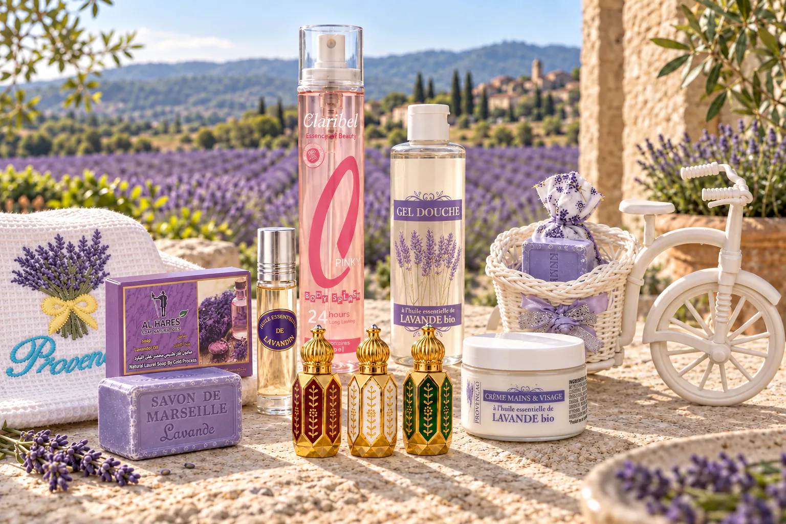
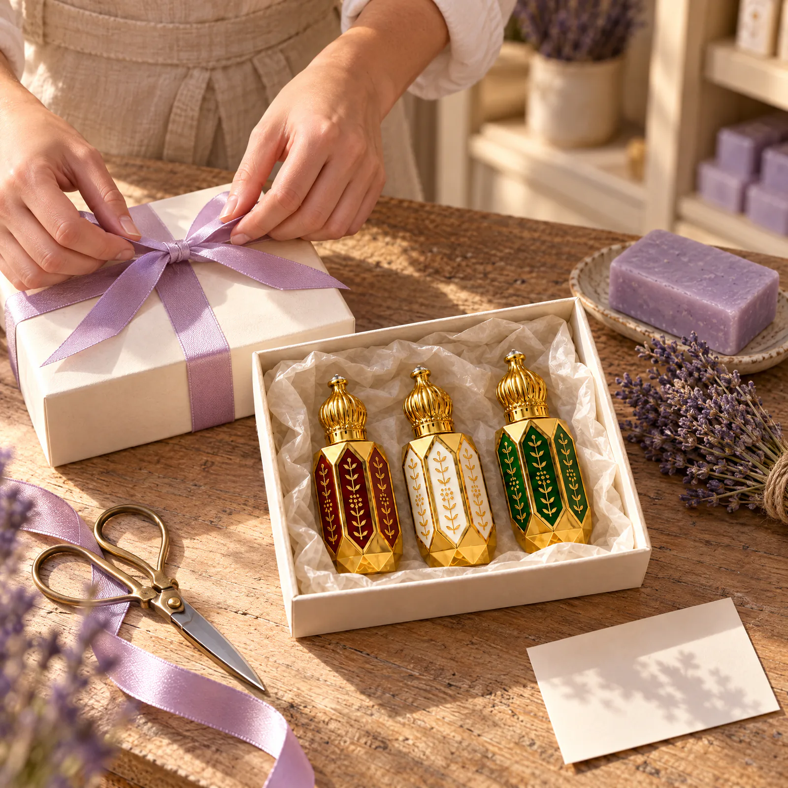

Des savons 100 % naturels.
Des muscs sans alcool.
Boîte, ruban et mot manuscrit offerts sur demande.
Trois flacons.
À chacun son envie.
Un musc à 7,99 €, ou le trio à 20,99 € pour les découvrir ensemble.


Du laurier de Kessab
au lait d’ânesse bio.


Crème mains et visage au lait d’ânesse et à l’huile d’argan bio
Pot de 100 ml, karité, senteur lait.


Le cadeau commence
avant d’être ouvert.
Vous choisissez les produits et les mots. Au comptoir, nous nous occupons du reste.
- 01
Une boîte, un ruban lavande.
Vos produits réunis et l’emballage cadeau offert.
- 02
Quelques mots de vous.
Votre message recopié à la main sur une carte.
- 03
Prêt à faire plaisir.
Aucun prix dans le colis. L’option se choisit dans le panier.
Une maison derrière chaque colis.
Maison Lavandin est le nom de notre boutique en ligne. Derrière, il y a PROVENCAO, une entreprise familiale, un comptoir à Aix-en-Provence et une équipe qui prépare vos commandes.
Lire notre histoireComment choisir entre les trois muscs ?
Consultez les portraits de Grenade, Blanc et Aroussa pour préciser vos envies. Le coffret réunit les trois flacons de 6 ml pour les découvrir chez vous.
Puis-je faire envoyer un cadeau ?
Oui. Cochez l’emballage cadeau dans le panier et ajoutez votre message. Boîte, ruban et mot manuscrit sont offerts sur demande. Aucun prix n’apparaît dans le colis.
Quand ma commande est-elle expédiée ?
Le comptoir la confirme par e-mail sous 48 h ouvrées, avec le moyen de paiement. Elle est ensuite préparée sous 12 h et expédiée sous 24 h ouvrées après paiement, depuis Aix-en-Provence.
Quelles attentions sont offertes ?
Dès 39,99 € d’achat : un sachet de lavande et un roll-on d’huile essentielle. Dès 49 € : la livraison offerte.